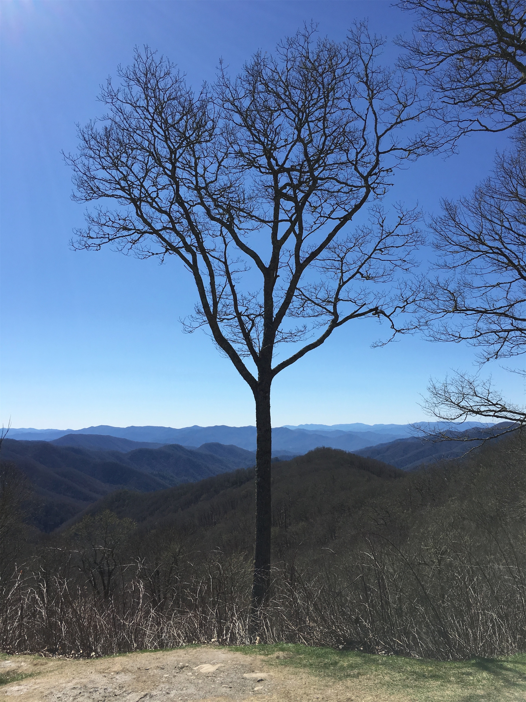
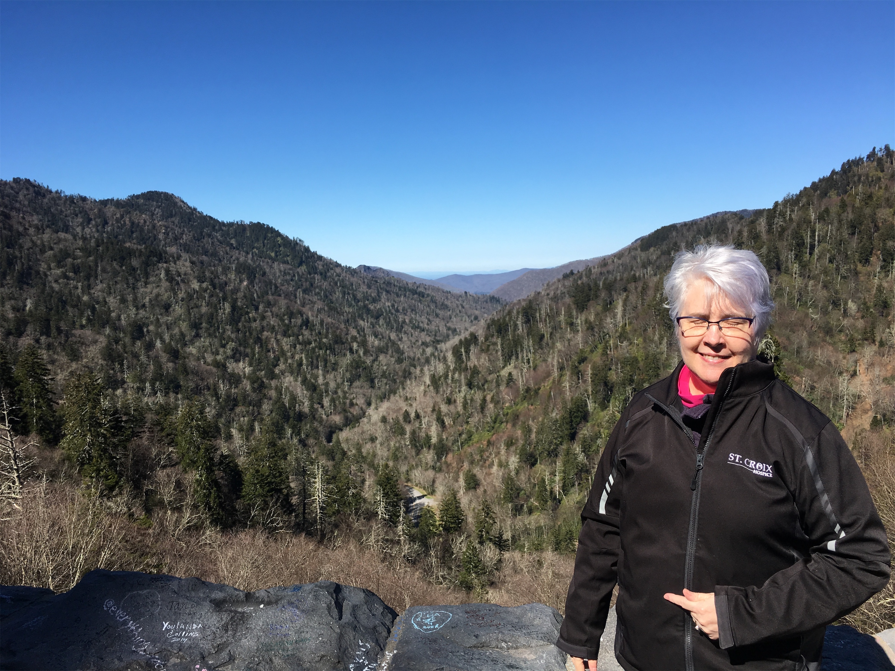
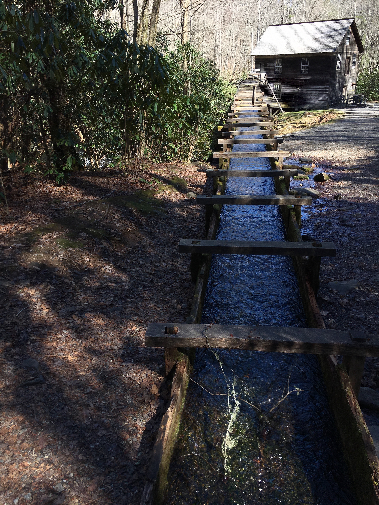
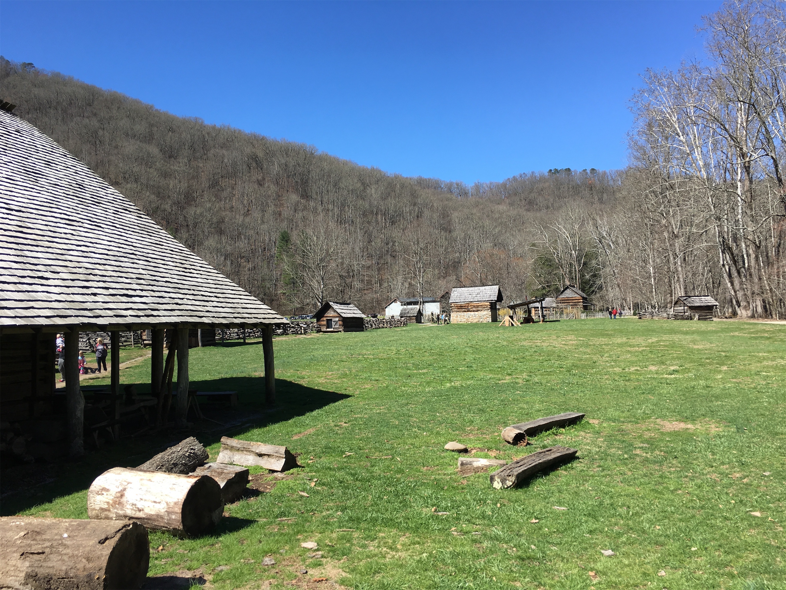

Saturday, Mar 3, 2018, 11:22 AM EST
Sugarlands Visitor Center - NPS, Gatlinburg, TN, United States
45°F Sunny
45°F Sunny
![]()
Today we took I-40 west about 2 hrs. from Montreat to Gatlinburg, TN, which is the busy tourist-trap near the Sugarlands Visitor Center entrance. Here, we learned that most roads that are “closed for winter” are still closed, notably the route to Clingman’s Dome (the highest mountain in the park) and the Roaring Fork Motor Nature Trail circle. But, we had a nice 1-hour drive along Highway 441, Newfound Gap Road, which cuts through the eastern part of the park from Gatlinburg in the north to Cherokee, NC in the south. The road is the lowest drivable route through the Smoky’s, and hits a peak of just over 5,000 feet. We pulled over at the top, in a big parking lot, and found the Appalachian Trail, which goes along the TN/NC border through most of the park, which Deb and I technically walked :) The winds here would go from 0 to 60 in seconds, and then right back down again. Rockefeller donated a huge amount of money to help acquire the park land. His only demands: the park must be free to enter for perpetuity, and they built a memorial to his mother here.
The descent from the gap runs along the Oconaluftee River and goes to the southern Oconaluftee Visitor Center, which has a collection of Appalachian mountain farm buildings from the late 19th century that were relocated here to become an outdoor museum. Just before this, we stopped at the 1886 Mingus Grist Mill, which served the area for 50 years. Going back home, we decided to take the Blue Ridge Parkway, which starts here (and goes to Shenandoah National Park in VA), after being assured by the Ranger that it was open, but we found it closed at Saco Gap, so we took Highway 19 back home through Maggie Valley. Later, we found it was closed to clear debris from the recent very high winds. Today, it was 50 degrees and sunny, although about 15 degrees cooler at the higher altitude.





